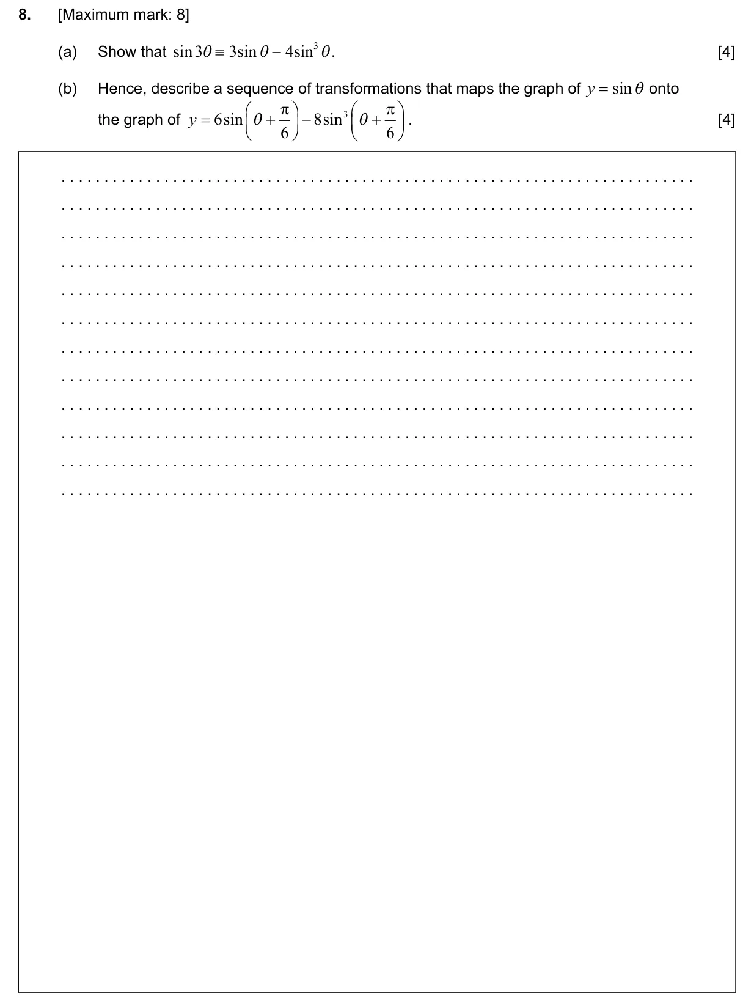
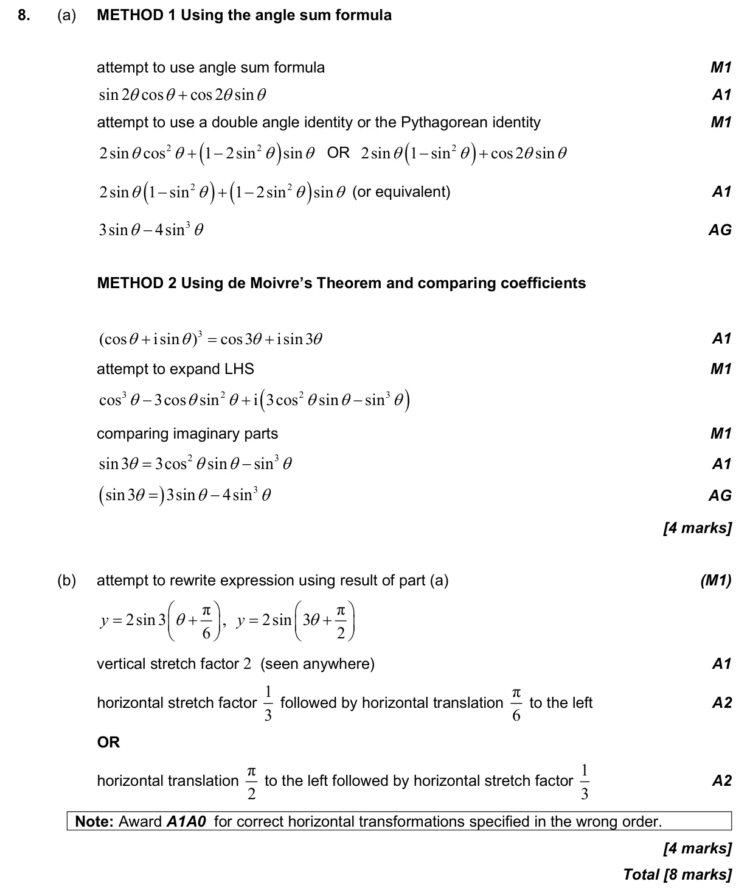

8 marks P1 TZ1 Section A No calculator 2.11 Transformations of graphs3.7 Circular functions: graphs, composites and transformations3.10 Compound angle identities3.6 Pythagorean identity and double angles1.6 Simple deductive proof Question Hide breakdown ab Markscheme 